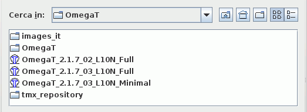
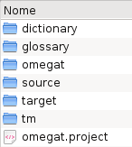

File e directory di OmegaT
OmegaT lavora con tre tipi di file.
- File del progetto di traduzione: costituiscono un progetto di traduzione. La loro perdita può significare la compromissione dell'integrità del progetto e la possibilità di portarlo a termine. I file del progetto sono i file più importanti in OmegaT. Essi sono i file con cui si ha a che fare quotidianamente durante la traduzione.
- File di impostazione dell'utente: sono creati quando le impostazioni delle preferenze di accesso dell'utente modificano il comportamento di OmegaT. La loro perdita farà sì che OmegaT lavori con le impostazioni di "fabbrica". Questo potrebbe causare qualche piccolo problema quando si è nel mezzo di una traduzione.
- File dell'applicazione: essi sono inclusi nel pacchetto scaricato e la maggior parte di essi sono necessari affinché OmegaT funzioni correttamente. Se per qualche ragione questi file vengono perduti, basta scaricare e, oppure solo, reinstallare OmegaT per ripristinarli completamente.
File del progetto di traduzione
Un progetto di traduzione di OmegaT è composto da diversi file e directory.
Posizione dei file del progetto di traduzione
Quando si crea un progetto di traduzione, OmegaT crea automaticamente un elenco di directory che poi serviranno come deposito per i file, come pure diversi file che verranno usati per impostare alcune preferenze del progetto e conservare la sua memoria di traduzione. Per impostazione predefinita, le directory di un progetto di traduzione sono tutte raggruppate sotto la cartella principale del progetto. Le posizioni alternative per le directory possono essere scelte alla creazione del progetto o durante la traduzione. La possibilità di selezionare directory esistenti o di crearne nuove è offerta per meglio adattarsi alle abitudini di lavoro dell'utente. Per modificare la posizione delle directory dopo la creazione di un progetto, aprire il menu Progetto → Proprietà... e apportare le necessarie modifiche.
Elenco dei file del progetto di traduzione
In una finestra di scelta file aperta da OmegaT, un progetto di traduzione assomiglia a un file con un'icona di OmegaT associata. Da un gestore di file, tuttavia, lo stesso progetto di traduzione assomiglierà a qualsiasi altra cartella.

La selezione dell'elemento con l'icona di OmegaT è sufficiente per aprire il progetto. Un progetto di traduzione Progetto_Esempio creato con le impostazioni predefinite, verrà creato come una nuova sottocartella dalla struttura seguente:

All'inizio, tutte le sottocartelle di un progetto saranno vuote.
Omegat
- La sottocartella omegat conterrà eventualmente vari file, tra cui il più importante è quello della memoria di traduzione project_save.tmx (...). Il file project_save.tmx è la memoria funzionante del progetto. Con la funzione di salvataggio automatica attivata, essa sarà aggiornata in modo automatico alla chiusura del programma. È la memoria di traduzione usata per creare i file tradotti. Vari file TMX con nome project_save.tmx.<data e ora>.bak (...) saranno poi aggiunti a questa sottocartella. Essi fungono da copia di sicurezza del progetto di memoria di traduzione e vengono aggiunti ogni volta che si riapre un progetto, ricopiando il suo contenuto prima che la sessione corrente lo modifichi.
- Il file stats.txt (...) contiene le statistiche sul progetto attivo e può essere aperto in un foglio elettronico per visualizzare le informazioni per il conteggio delle parole e dei segmenti. Le informazioni in esso contenute sono più dettagliate di quelle visualizzate nella finestra File del progetto. I file ignored_words.txt e learned_words.txt, se presenti, saranno usati dal correttore ortografico.
Source
- La sottocartella "source" è lo spazio in cui inserire i file da tradurre. Potete specificare una nuova sottocartella e aggiungere file al progetto in seguito, come pure farlo dalla finestra "File del progetto". Si noti che la struttura della sottocartella source è gestita completamente dall'utente. Se i file da tradurre fanno parte di una struttura ad albero, basterà specificare la sottocartella principale e OmegaT copierà l'intera struttura, mantenendola intatta.
Target
- Quando si seleziona Progetto → Crea i documenti di arrivo a progetto aperto, tutti i file in /source/, che siano o no tradotti, saranno ricreati qui con la medesima struttura di cartelle, per riflettere lo stato attuale della traduzione. In parole povere, OmegaT unisce le informazioni di traduzione salvate in /omegat/project_save.tmx con i documenti di partenza per produrre il contenuto di /target/.
Tm
- In questa sottocartella possono essere inserite le memorie di traduzione provenienti da precedenti traduzioni. Esse devono avere il formato tmx. Usare gli strumenti a disposizione per trasformarle da altri formati. Si noti che project_save.tmx è la memoria di traduzione, che si interpone tra i file di partenza e quelli eventuali di arrivo. I file TM sussidiari, tuttavia, sono disponibili per ricercare le corrispondenze più adatte per i segmenti non tradotti.
omegat.project
- OmegaT crea automaticamente questo file quando viene creato il progetto. Esso contiene i parametri del progetto. I parametri inclusi in questo file possono essere modificati dalla finestra "Proprietà del progetto".
- project_name-omegat.tmx (...)
project_name-level1.tmx
project_name-level2.tmx
- Questi file contengono i segmenti di partenza e di arrivo che corrispondono al contenuto della cartella /source/ al momento della loro creazione (in genere quando vengono creati i file tradotti).
File dell'utente
Posizione dei file dell'utente
I file dell'utente sono memorizzati in una posizione separata, affinché siano accessibili da qualsiasi versione di OmegaT. La posizione dipende dalla piattaforma in uso:
|
Windows
|
- 2000 e XP: Documents and Settings\<Nome Utente>\Dati applicazioni\OmegaT
- Vista: Users\<Nome Utente>\AppData\Roaming\OmegaT
- Altri: <Qualcosa>\OmegaT (<Qualcosa> corrisponde alla posizione della cartella "home" come determinata da Java.)
|
- Linux/Solaris/FreeBSD
|
- <Home Utente>/.omegat (.omegat è una directory, il punto che precede il suo nome la rende invisibile, a meno che non si digiti
ls -a o un comando equivalente).
|
- MacOSX
|
- <Home Utente>/Library/Preferences/OmegaT
|
- Altro
|
- <Home Utente>
|
Elenco dei file dell'utente
- log.txt
|
- Questo file registra i messaggi di errore Java durante l'esecuzione di OmegaT. Quando si ritiene che OmegaT si stia comportando in modo strano, è importante includere questo file o la parte pertinente in qualsiasi segnalazione di errore.
|
- omegat.prefs
|
- È un file xml con tutte le impostazioni delle opzioni di accesso all'interfaccia grafica, come pure i dati delle posizioni delle finestre.
|
- filters.conf
|
- È un file xml con tutti i dati impostati dalle preferenze dei filtri dei file.
|
- segmentation.conf
|
- È un file xml con tutti i dati impostati dalle preferenze della segmentazione di frase.
|
File dell'applicazione
OmegaT è fornito come pacchetto scaricabile da SourceForge. In questo capitolo si considererà il pacchetto indipendente da piattaforma, che contiene l'applicazione in una forma Java standard. Altri pacchetti includono un pacchetto .tar Linux, un installatore Windows con o senza Java Runtime Environment, un installatore MacOSX e un pacchetto di codice sorgente per gli sviluppatori. Questo pacchetto indipendente dalla piattaforma può essere usato su qualsiasi piattaforma che abbia installato Java 1.5 runtime environment, incluse quelle per le quali esiste un pacchetto specifico. Il pacchetto indipendente è fornito come file compresso, e va scompattato nella cartella di propria scelta per l'installazione. La decompressione si esegue, in genere, facendo doppio clic sul pacchetto scaricato. Una volta scompattato, sarà creata una cartella che contiene i seguenti elementi:
|
File/
sottocartella
|
Contenuto
|
| /docs/ |
- Tutti i file del manuale utente si trovano in questa cartella. Potete aprirli in un browser web per accedere ai collegamenti esterni.
|
- /images/
|
- Le icone e le immagini del logo si trovano qui.
|
- /lib/
|
- I file Java si trovano qui. Essi sono necessari al corretto funzionamento di OmegaT.
|
- join.html
|
- Questo è un normale file html che se aperto nel proprio browser web reindirizzerà l'utente al gruppo utenti di OmegaT ospitato in Yahoo Groups. Non è necessario iscriversi, ma permetterà l'accesso ad alcuni servizi aggiuntivi, come alcuni file e vari sondaggi, oltre a consentire di partecipare alle discussioni inerenti OmegaT. Gli del gruppo sono pubblici e non è richiesta iscrizione al gruppo per la consultazione.
|
- changes.txt
|
- Un elenco dettagliato delle modifiche apportate alla versione attuale con riferimento a quelle precedenti.
|
- license.txt
|
- La GNU GENERAL PUBLIC LICENSE. Questa licenza permette di eseguire determinate operazioni con OmegaT, incluso la sua modifica e distribuzione. Se si è interessati alla modifica e alla distribuzione di OmegaT, è bene leggere attentamente questo documento e assicurarsi di conoscere tutte le implicazioni che ne conseguono. In caso di dubbio, non esitare a chiedere direttamente ai membri del progetto, inviando loro un messaggio dalla pagina di Source Forge o un messaggio pubblico al gruppo.
|
- doc-license.txt
|
- La GNU GENERAL PUBLIC LICENSE. Questa licenza di occupa della documentazione. Vedere sopra.
|
- readme.txt
|
- Questo è un file molto importante e lo si deve leggere prima di iniziare a usare OmegaT. Comprende informazioni generali su OmegaT, dove trovare ulteriori informazione, come contribuire, ecc. È tradotto in varie lingue.
|
- OmegaT
|
- È un file di testo che contiene due righe:
#!/bin/bash
java -jar OmegaT.jar $*
Può essere utile se lo si vuole rendere eseguibile (chmod +x OmegaT) dalla riga di comando dopo essersi assicurati di essere nella directory /OmegaT_2.0/. Da questo momento in poi si sarà in grado di avviare OmegaT richiamando questo file dalla riga di comando.
|
- OmegaT.bat
|
- Un file batch, usato per avviare OmegaT dalla riga di comando di Windows. Contiene solo la seguente riga:
java -jar OmegaT.jar %*
|
- OmegaT.jar
|
- L'applicazione principale di OmegaT. Per avviare OmegaT si può richiamare questo dalla riga di comando o avviarlo dal proprio gestore di file (in genere facendovi sopra doppio clic).
|